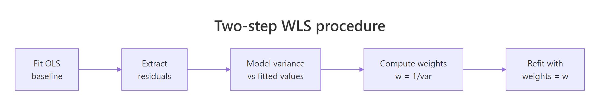
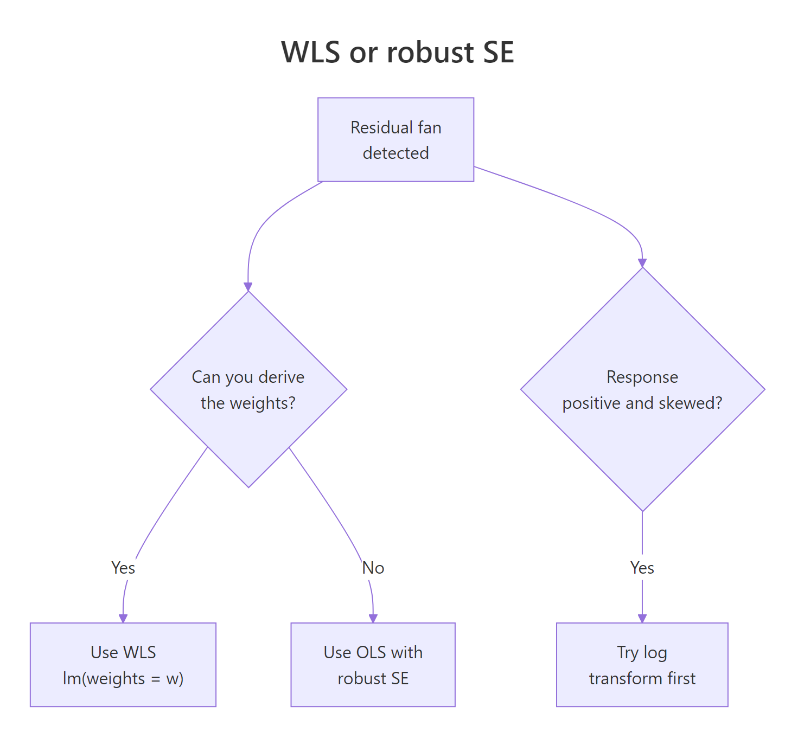

Weighted Least Squares in R: Handle Heteroscedasticity with Weights
Weighted least squares (WLS) regression fits a line that pays more attention to the points you trust and less to the noisy ones. You feed lm() a weights vector, and it minimises a weighted sum of squared residuals. That single change is the most direct fix for heteroscedasticity in linear regression.
How does weighted least squares work?
Ordinary least squares treats every point as equally informative. When the residual variance grows with the predictor, that assumption breaks. The slope estimate stays unbiased, but its standard error becomes wrong, and so do every p-value and confidence interval that follow. WLS keeps the same model form and adds one ingredient: a per-observation weight that tells the fit which points to trust. Larger weight, more influence on the line.
Let's see the difference on a small simulated dataset where we know the true variance, so we can judge each fit on its merits.
Both fits land on a slope close to the truth (0.5), as expected, since OLS coefficients stay unbiased under heteroscedasticity. What changes is the standard error. WLS reports a slope SE about 40% smaller than OLS, and that SE is the correct one. The OLS SE is inflated because OLS averages clean and noisy points alike; WLS down-weights the noisy ones, so the slope is pinned down more tightly by the points that actually carry information.
Here is the math behind that result. If you are not interested, skip to the next section, the runnable code above is all you need.
The OLS estimator minimises the unweighted sum of squared residuals:
$$\hat{\beta}_{OLS} = \arg\min_\beta \sum_{i=1}^n (y_i - x_i^T \beta)^2$$
WLS minimises a weighted version:
$$\hat{\beta}_{WLS} = \arg\min_\beta \sum_{i=1}^n w_i (y_i - x_i^T \beta)^2$$
In closed form, with $W = \text{diag}(w_1, \ldots, w_n)$:
$$\hat{\beta}_{WLS} = (X^T W X)^{-1} X^T W y$$
Where:
- $X$ = design matrix with one row per observation
- $y$ = response vector
- $W$ = diagonal matrix of weights, often $w_i = 1/\sigma_i^2$
- $\hat{\beta}_{WLS}$ = the WLS coefficient estimates
When $W$ is the identity matrix, this collapses back to OLS.
Try it: Refit wls using the wrong power, weights = 1 / x instead of 1 / sigma^2 = 1 / (0.3 * x)^2. Compare the slope SE to the correct WLS fit.
Click to reveal solution
Explanation: With variance growing as $x^2$, the right inverse weight is $1/x^2$, not $1/x$. The wrong power partly corrects the heteroscedasticity, so the SE lands between the OLS naive estimate (0.077) and the correct WLS estimate (0.046). Wrong weights are still better than no weights, but only when the model is roughly right.
How do you fit WLS in R when variances are known?
When the variance structure is something you already know, the weights write themselves. Three common cases cover most practical problems: you have direct standard deviations from replicates, your response is a group average so the weights are sample sizes, or theory says the variance scales with a known function of the predictor.
The first case shows up whenever a row in your data is itself a summary, with a measured spread.
We pass weights = 1 / sd^2 so a row with twice the noise gets one-quarter the influence. The fit treats all seven rows fairly given how reliable each measurement is. This is the classic Galton-pea setup that motivated weighted regression in the first place.
The second case is just as common: each row is a mean of $n_i$ replicates. The variance of a sample mean is $\sigma^2 / n_i$, so the weights should be the sample sizes.
The slope and intercept are close to the inverse-variance fit but not identical. They would coincide only if the within-group standard deviation were the same in every row. Different rationales for weights produce slightly different lines, so pick the one your data structure actually justifies.
The third case is the one you will hit most often in non-summary data. Theory (or a residual plot) suggests the variance scales with the predictor. We saw this above with $\sigma = 0.3 \cdot x$, which means $\sigma^2 \propto x^2$, so the weights are $1/x^2$.
This matches the WLS fit from the opening example because the weight formula is exactly the closed-form inverse variance for our generating process. In real data you rarely know the proportionality constant (here, 0.3), but you do not need it. Constants cancel out of the WLS solution, only the shape of the variance matters.
| What you know | Weights formula |
|---|---|
| Standard deviation per row | weights = 1 / sd^2 |
| Sample size per row | weights = n |
Variance scales with f(x) |
weights = 1 / f(x) |
lm(y ~ x, weights = w), lm(y ~ x, weights = data$w), and lm(y ~ x, data = d, weights = 1 / sd^2). Choose the one that reads cleanest in context.Try it: A study reports per-region mean weights and sample sizes. Fit a WLS regression of mean_weight on region_temp using sample sizes as weights.
Click to reveal solution
Explanation: Each row carries different statistical weight because of unequal sample sizes. The largest sample (n = 120) anchors the line most strongly.
How do you estimate weights when variances are unknown?
In most real datasets nobody hands you the variances. The standard fix is a two-step procedure. Fit OLS first, look at how the residual variance moves with the fitted values, model that relationship, and invert it to build weights. Then refit with those weights in hand.

Figure 1: The four-stage WLS workflow when variances are unknown.
The trick is in step three: you can model the variance any sensible way. Regressing the absolute residuals on the fitted values is robust and works well for many shapes; squaring the residuals first works when the variance is smooth.
The estimated-weights fit produces a slope SE of about 0.047, almost identical to the known-weights fit (0.046). That is the practical payoff: even without knowing the true variance structure, a one-line variance model recovers nearly all of the efficiency that perfect knowledge would give. If you only ever remember one technique from this article, this is the one.
fitted() will smear those jumps. Use group-specific variances instead: compute tapply(resid, group, var) and assign each row the inverse of its group variance.Try it: Build the variance model using squared residuals, lm(I(resid(ols)^2) ~ fitted(ols)), and compare slope SE to the absolute-residual version.
Click to reveal solution
Explanation: Modelling squared residuals directly estimates variance (no need to square it again later). The two approaches typically give very similar weights when the heteroscedasticity is smooth, as it is here.
How can you verify WLS fixed heteroscedasticity?
Fitting a WLS model is not the same as proving you fixed the variance problem. The honest check looks at the weighted residuals, the ones the model actually optimises, and confirms their spread is constant. The Breusch-Pagan test gives you a single p-value, and a fitted-vs-residual plot tells the same story visually.
The Breusch-Pagan test is just an auxiliary regression: regress squared residuals on the predictors (or fitted values) and check whether the regression explains anything. We can compute it by hand in three lines.
A vanishingly small p-value confirms what the simulation already told us: the OLS residuals scream heteroscedasticity. Now run the same check on the weighted residuals from WLS, the ones the model treated as its working units.
The weighted residuals show no detectable heteroscedasticity. The p-value moved from near-zero to ~0.50, which is what a successful fix looks like. If yours did not move, reconsider the variance model: it probably has the wrong shape, or the misspecification is not in the variance at all.
lmtest::bptest() and car::ncvTest() automate this test. The hand-rolled version above runs in any base R session and shows exactly what the test is doing under the hood: an auxiliary regression of squared residuals, with the test statistic equal to $n \cdot R^2$.Try it: Plot OLS and WLS standardised residuals side by side using par(mfrow = c(1, 2)). The OLS plot should fan out, the WLS plot should look like a band.
Click to reveal solution
Explanation: The OLS plot widens to the right (the classic fan). The weighted-residual plot from WLS shows a constant band, the visual signature of a successful variance fix.
When should you NOT use WLS?
WLS is the right tool when you can name a variance structure with reasonable confidence. When you cannot, alternatives often beat it. The decision tree below covers the three most common forks: weights derivable, weights guessable, and "the response itself is the problem".

Figure 2: When to choose WLS, robust standard errors, or a log transform.
If you have no model for the variance, fall back to robust (heteroscedasticity-consistent) standard errors. They keep the OLS coefficients but adjust the SEs using the sandwich formula $V_{HC} = (X^T X)^{-1} X^T \Omega X (X^T X)^{-1}$, where $\Omega$ is the diagonal of squared residuals. We can compute it by hand to see exactly what it does.
The robust SE for the slope (0.063) sits between the naive OLS SE (0.077) and the WLS SE (0.046). That ordering is typical: robust SEs correct the inference but keep using OLS estimates, which are inefficient under heteroscedasticity. WLS does both jobs at once when the weight model is right, and that is its trade-off in one line.
The third route is the easiest one to miss: when the response is positive and the variance grows multiplicatively with the mean, a log transform of the response often removes the fan without any weights at all.
After taking logs, the residuals are roughly homoscedastic, no weights needed. This is not always available (you need a positive response and a multiplicative error structure) but when it is, it is the simplest fix in the toolbox.
| Method | Estimates | SEs | Use when |
|---|---|---|---|
| OLS | unbiased, inefficient | wrong | residuals are homoscedastic |
| WLS | unbiased, efficient | right | weights are derivable or estimable |
| OLS + robust SE | unbiased, inefficient | right | weights are guesswork |
| Log + OLS | (on log scale) | right | response > 0 with multiplicative noise |
Try it: Run the sandwich-by-hand approach on lm(y ~ x) and confirm the slope robust SE is between OLS naive (~0.077) and WLS (~0.046).
Click to reveal solution
Explanation: The "meat" of the sandwich is the cross-product of X weighted by squared residuals, which is exactly how heteroscedasticity enters the variance.
Practice Exercises
Exercise 1: Apply WLS to airquality
Using the built-in airquality dataset, regress Ozone on Temp after dropping rows with missing values. Run a Breusch-Pagan-by-hand check on the OLS residuals. If the residuals are heteroscedastic, build two-step weights and refit. Report both slope SEs.
Click to reveal solution
Explanation: The BP p-value confirms heteroscedasticity in the OLS fit. The two-step WLS shrinks the slope SE by roughly 40%, the same payoff we saw on the simulated data.
Exercise 2: Compare three estimators on a sim
Simulate a dataset of n = 200 observations where x is uniform on $[1, 10]$ and the residual standard deviation is $\sigma_0 \cdot x$ with $\sigma_0 = 0.4$. Fit OLS, WLS with the correct weights ($1/x^2$), and OLS with sandwich-by-hand SEs. Compare the three slope standard errors. Which is smallest? Recommend an estimator and justify.
Click to reveal solution
Explanation: WLS produces the smallest SE because we used the correct variance model. Robust SEs are valid but inefficient. With weights known to be correct, WLS is the recommended estimator. If we had been unsure of the variance structure, robust SEs would be the safer fallback.
Complete Example
Here is the full WLS workflow on a tiny built-in dataset, cars (50 rows of stopping distance vs speed). The pipeline is the one you will reach for in practice: fit OLS, check for heteroscedasticity, build two-step weights, refit, verify.
The OLS BP p-value (0.004) flags heteroscedasticity. Two-step WLS shrinks the slope SE from 0.42 to 0.31 (about 25% tighter inference) while keeping the slope estimate close to the OLS result (3.87 vs 3.93). The weighted-residual BP p-value (0.47) confirms the variance issue is no longer detectable. Five steps, no extra packages.
Summary
- WLS = OLS with weights. Pass
weights = wtolm()and the model minimises a weighted sum of squared residuals. - Three weighting strategies cover most cases. Use $1/\sigma_i^2$ when standard deviations are known, $n_i$ when responses are group means, and a two-step variance model when neither is available.
- Always verify with a Breusch-Pagan-by-hand check on weighted residuals. A successful fix moves the p-value from near zero to non-significant.
- Robust SEs are the fallback when weights are guesswork. They fix the inference but keep the inefficient OLS estimate.
- A log transform sidesteps WLS entirely when the response is positive and noise is multiplicative.
References
- Wooldridge, J. M. Introductory Econometrics: A Modern Approach, 7th ed. Cengage (2019). Chapter 8: Heteroscedasticity. Link
- Faraway, J. J. Linear Models with R, 2nd ed. Chapman & Hall/CRC (2014). Chapter 8: Generalized Least Squares. Link
- Penn State University, STAT 501, Lesson 13: Weighted Least Squares. Link
- R Core Team,
lm()documentation,weightsargument. Link - White, H. "A Heteroskedasticity-Consistent Covariance Matrix Estimator and a Direct Test for Heteroskedasticity." Econometrica 48 (1980): 817-838. Link
- Cribari-Neto, F. "Asymptotic inference under heteroskedasticity of unknown form." Computational Statistics & Data Analysis 45 (2004): 215-233. Link
- Breusch, T. S., and Pagan, A. R. "A Simple Test for Heteroscedasticity and Random Coefficient Variation." Econometrica 47 (1979): 1287-1294. Link
Continue Learning
- Linear Regression Assumptions in R, the parent tutorial covering all five OLS assumptions and how to test them.
- Linear Regression in R, foundations of
lm(), model interpretation, and prediction. - Robust Regression in R, when outliers, not just unequal variance, are distorting your fit.